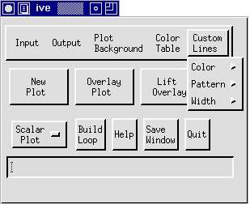
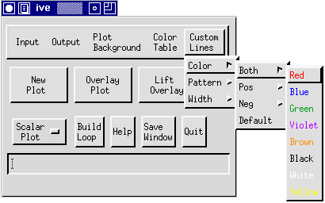
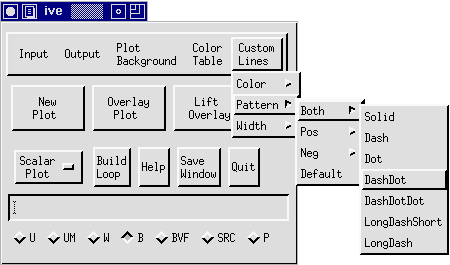
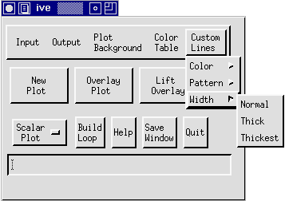

This document describes Custom Lines options and
procedures.

Once you have created a 1D or 2D scalar contour plot (see Producing a 1D Scalar Plot and Producing a 2D Scalar Plot), the Custom Lines
options are available for varying contour attributes. To locate the
Custom Lines Menu, click on "Custom Lines" in the IVE Main Window
(see figure below).

Custom Lines Menu
The Custom Lines Menu contains the following options:
Color, Pattern, and Width.
- Color: The Color option allows you to select the
colors of lines in the plot. Clicking on "Color" with the left
mouse button activates a submenu containing the choices
Both, Pos, Neg, and Default. Each of
these choices is attached to a small color menu as depicted
below:

Selecting a color from Pos
causes all positive contours in the plot to change to that color.
Similarly, choosing a color from Neg changes all negative
contours. If you want both positive and negative contours to be the
same color, select a color from Both. Clicking on
Default returns all plots to their default settings.
- Pattern: The Pattern option contains the same
submenu as Color. However, Pattern enables you to
select line patterns instead of colors. The following patterns are
available: Solid, Dash, Dot, DashDot, DashDotDot, LongDashShort,
and LongDash (see image below):

As in the Color option,
Pos affects positive contours, Neg affects negative
contours, and Both affects both positive and negative
contours. Therefore, to select a contour pattern, simply decide if
you want to change positive contours, negative contours, or both.
Then click on the appropriate box and select the pattern type. For
example, to create a plot containing long-dashed positive contours
and dotted negative contours, you would select "LongDash" from
Pos and "Dot" from Neg. The Default option
resets line patterns to the default, where positive contours are
"Solid" and negative values are "Dash".
- Width: The final Custom Lines option is Width.
This choice varies the width of both positive and negative contours
simultaneously. Clicking on Width opens a submenu containing
the choices Normal, Thick, and Thickest (See figure).

Normal is the default width setting
and produces the thinnest contours. If you desire thicker contours,
Thick and Thickest can be selected to vary the width of your
contours accordingly.
Once you have altered the Custom Lines settings, the changes do
not take affect until a new plot is created (see PLOT).
back to index